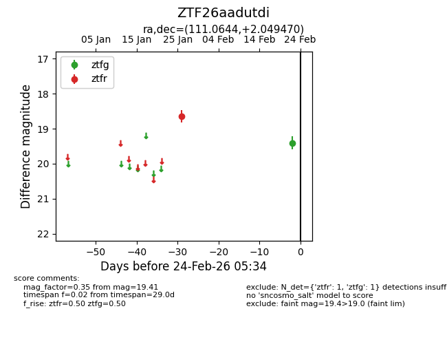
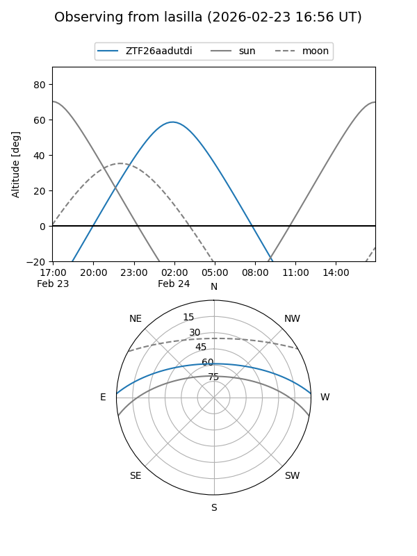
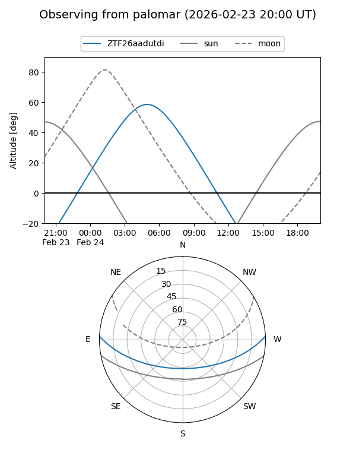

ZTF26aadutdi
Target ZTF26aadutdi at 2026-02-24 09:08
Aliases and brokers:
FINK: link
Lasair: link
ALeRCE: link
alt names
ZTF26aadutdi (ztf,fink_ztf)
Coordinates:
equatorial (ra, dec) = 111.0644,+2.04947
equatorial (HMS+DMS) = 07:24:15.46,+02:02:58.09
galactic (l, b) = (214.8547,+8.23538)
Flags:
Photometry:
last ztfg=19.41, ztfr=18.64
1 ztfg, 1 ztfr detections
Lightcurve

Visibility


Additional plots